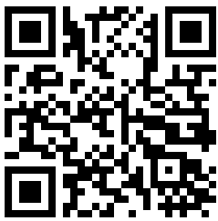

डिवाइस को सतह पर सपाट रखें
अधिकांश कंप्यूटरों में आवश्यक सेंसर नहीं होते हैं। QR कोड स्कैन करें अपने मोबाइल डिवाइस पर जारी रखने के लिए।

कोणों को मापने के लिए इस ऑनलाइन इनक्लिनोमीटर का उपयोग कैसे करें
यह ऑनलाइन इनक्लिनोमीटर एक वेब-आधारित एप्लिकेशन है जिसे आपके स्मार्टफोन या टैबलेट में पहले से मौजूद सेंसर का उपयोग करके, सतह के कोणों (ढलान, पिच और रोल) को उच्च परिशुद्धता के साथ मापने के लिए डिज़ाइन किया गया है। यह आपके डिवाइस को बिना किसी सॉफ्टवेयर इंस्टॉलेशन के मुफ्त में एक शक्तिशाली डिजिटल स्पिरिट लेवल, बबल लेवल या क्लिनोमीटर में बदल देता है। सब कुछ सीधे आपके वेब ब्राउज़र में चलता है, जिससे कहीं भी कोणों और ढलानों को मापना आसान हो जाता है। इसे कोण मापने, ढलान मापने, या पिच और रोल की जांच करने के लिए एक विश्वसनीय उपकरण के रूप में उपयोग करें।
मुख्य कार्यक्षमता
- वास्तविक समय कोण मापन: एक बार जब आप सेंसर एक्सेस प्रदान करते हैं और प्रारंभ करें दबाते हैं, तो एप्लिकेशन वास्तविक समय में पिच (एक्स-अक्ष) और रोल (वाई-अक्ष) कोणों की गणना करने के लिए आपके डिवाइस के एक्सेलेरोमीटर और जाइरोस्कोप से डेटा पढ़ता है। यह एक तत्काल कोण माप और ढलान माप प्रदान करता है।
- उच्च-परिशुद्धता बबल लेवल: केंद्रीय ग्राफिक इंटरफ़ेस में एक वर्चुअल बबल होता है जो डिवाइस के झुकाव के आधार पर चलता है, जो एक आदर्श स्तर प्राप्त करने के लिए एक सहज दृश्य गाइड प्रदान करता है। यह आपके ब्राउज़र में एक मुफ्त इनक्लिनोमीटर है।
- शून्य अंशांकन: शून्य बटन आपको किसी भी सतह को संदर्भ बिंदु (0 डिग्री) के रूप में सेट करने की अनुमति देता है। यह किसी सतह के कोण को दूसरे के सापेक्ष मापने के लिए उपयोगी है, बजाय पूर्ण स्तर के। ब्राउज़र टूल में किसी भी कोण के लिए एक आदर्श सुविधा। मैं इसका उपयोग आपके मोबाइल उपकरणों में उभरे हुए कैमरों जैसे बम्प्स को समायोजित करने के लिए भी कर सकता हूं।
- बिना देखे लेवलिंग: सेटिंग्स में ऑडियो फीडबैक सक्रिय करें, और जब एक आदर्श स्तर प्राप्त हो जाएगा तो आपका डिवाइस बीप करेगा, जिससे आप स्क्रीन की लगातार निगरानी किए बिना सतहों को समतल कर सकते हैं।
अस्वीकरण: सटीकता को समझना
कृपया ध्यान रखें कि यद्यपि यह उपकरण ढलान को मापने का एक सुविधाजनक तरीका प्रदान करता है, एक सामान्य स्मार्टफोन में सेंसर मेट्रोलॉजी-ग्रेड कोण माप के लिए डिज़ाइन नहीं किए गए हैं। सेंसर की गुणवत्ता, डिवाइस अंशांकन, और यहां तक कि आपके फोन के मामले पर छोटे धक्कों जैसे कारक त्रुटियों का परिचय दे सकते हैं। कई DIY और हॉबीस्ट कार्यों के लिए, सटीकता पर्याप्त से अधिक है। हालांकि, प्रमाणित परिशुद्धता की आवश्यकता वाले पेशेवर अनुप्रयोगों के लिए, एक समर्पित, कैलिब्रेटेड स्पिरिट लेवल की सिफारिश की जाती है। यह उपकरण अधिकांश रोजमर्रा की जरूरतों के लिए एक विश्वसनीय कोण माप प्रदान करता है।
माप सटीकता में सुधार कैसे करें
आप एक सरल दो-चरणीय अंशांकन विधि का उपयोग करके अपनी ढलान माप की सटीकता में काफी सुधार कर सकते हैं और सेंसर पूर्वाग्रह की भरपाई कर सकते हैं। यह प्रक्रिया फोन की अंतर्निहित शून्य-ऑफसेट त्रुटि के अधिकांश को प्रभावी ढंग से रद्द कर देती है जब आपको बेहतर परिशुद्धता के साथ एक कोण मापने की आवश्यकता होती है।
- पहला माप: अपने फोन को उस सतह पर रखें जिसे आप मापना चाहते हैं और कोण रीडिंग नोट करें (उदाहरण के लिए 8°)।
- दूसरा माप: इसे उठाए बिना, अपने फोन को उसी स्थान पर ठीक 180° घुमाएं (ताकि यह अपनी मूल स्थिति के साथ "आमने-सामने" हो) और दूसरी रीडिंग लें (उदाहरण के लिए 10°)।
- वास्तविक कोण की गणना करें: वास्तविक कोण इन दो मापों का औसत है। उदाहरण के लिए: (8 + 10) / 2 = 9°। यह ब्राउज़र में आपका अधिक सटीक ढलान है।
सेंसर त्रुटियों को रद्द करने और अधिक सटीक कोण माप प्राप्त करने के लिए 180° रोटेशन विधि का उपयोग करें।
"शून्य" अंशांकन कैसे करें
शून्य अंशांकन आपको अपनी वर्तमान सतह को नए संदर्भ बिंदु (0 डिग्री) के रूप में सेट करने की अनुमति देता है, जो सापेक्ष कोणों को मापने या असमान सतहों की भरपाई के लिए आवश्यक है। यहाँ यह कैसे करना है:
- डिवाइस रखें: अपने स्मार्टफोन या टैबलेट को उस सतह पर मजबूती से रखें जिसे आप अपने 0° संदर्भ के रूप में नामित करना चाहते हैं।
- स्थिर करें: सुनिश्चित करें कि आपका डिवाइस स्थिर है और हिल नहीं रहा है।
- अंशांकन के लिए शून्य दबाएं: इनक्लिनोमीटर इंटरफ़ेस पर शून्य बटन पर टैप करें।
- नई आधार रेखा: वर्तमान पिच और रोल रीडिंग तुरंत 0° पर रीसेट हो जाएगी, इस अभिविन्यास को आपके सभी बाद के मापों के लिए आपकी नई आधार रेखा के रूप में स्थापित किया जाएगा।
शून्य अंशांकन वर्तमान सतह को 0° संदर्भ के रूप में सेट करता है, जिससे सापेक्ष कोण माप की अनुमति मिलती है।
उभरे हुए कैमरों के लिए समायोजन
आधुनिक स्मार्टफोन्स में अक्सर कैमरा बम्प्स होते हैं जो उन्हें पूरी तरह से सपाट रहने से रोकते हैं। यह सटीक मापों में हस्तक्षेप कर सकता है, लेकिन आप इसे नीचे दिखाए अनुसार शून्य बटन का उपयोग करके आसानी से ठीक कर सकते हैं।
- रखें और निरीक्षण करें: अपने फोन को सतह पर रखें। ध्यान दें कि कैमरा बम्प एक मामूली, स्थिर झुकाव बनाता है, जो एक गैर-शून्य रीडिंग दिखाता है।
- शून्य दबाएं: शून्य बटन पर टैप करें। यह इनक्लिनोमीटर को फोन की वर्तमान झुकी हुई स्थिति को नए "0°" संदर्भ बिंदु के रूप में मानने का निर्देश देता है।
- सटीक रूप से मापें: डिस्प्ले अब 0° पढ़ेगा। कैमरा बम्प का प्रभाव रद्द हो जाता है, जिससे आप सतह के सापेक्ष सटीक माप ले सकते हैं।
कैमरा बम्प के कारण होने वाले झुकाव की भरपाई के लिए "शून्य" का उपयोग करें।
हमारे इनक्लिनोमीटर के लिए विस्तृत उपयोग के मामले
यह ब्राउज़र-आधारित इनक्लिनोमीटर कई कार्यों के लिए पिच और रोल को मापने के लिए एक बहुमुखी उपकरण है:
- निर्माण और बढ़ईगीरी: यह सुनिश्चित करने के लिए इस क्लिनोमीटर का उपयोग करें कि दीवारें पूरी तरह से लंबवत हैं और फर्श समतल हैं। छत को फ्रेम करते समय, यह सुनिश्चित करने के लिए पिच को मापें कि राफ्टर्स सही कोण पर काटे और स्थापित किए गए हैं। यह आँगन या पैदल मार्ग पर जल निकासी के लिए उचित ढलान स्थापित करने के लिए भी बहुत अच्छा है।
- सौर पैनल स्थापना: ऊर्जा उत्पादन को अधिकतम करने के लिए, सौर पैनलों को अक्षांश और मौसम के आधार पर एक इष्टतम झुकाव कोण पर सेट किया जाना चाहिए। स्थापना के दौरान पिच को सटीक रूप से मापने के लिए इस उपकरण का उपयोग करें, यह सुनिश्चित करते हुए कि आपके पैनलों में चरम दक्षता के लिए सूर्य के प्रति सही अभिविन्यास है।
- DIY और गृह सुधार: हर बार पिक्चर फ्रेम को पूरी तरह से सीधा लटकाएं। फर्नीचर को असेंबल करते समय या किचन कैबिनेट स्थापित करते समय, यह सुनिश्चित करने के लिए इनक्लिनोमीटर का उपयोग करें कि सब कुछ समतल है। यह वॉशिंग मशीन जैसे उपकरणों को स्थापित करते समय असंतुलन और कंपन को रोकने के लिए ढलान को मापने के लिए भी सही उपकरण है।
- फोटोग्राफी और वीडियोग्राफी: एक तिपाई पर अपने कैमरे को समतल करने के लिए इस उपकरण का उपयोग करके तिरछे क्षितिज से बचें। यह विशेष रूप से परिदृश्य, वास्तुकला और मनोरम फोटोग्राफी के लिए महत्वपूर्ण है जहां एक पेशेवर परिणाम के लिए सीधी रेखाएं आवश्यक हैं।
- वाहन और आरवी लेवलिंग: वाहन के निलंबन को संशोधित करने के बाद ड्राइवलाइन कोणों की जांच करें। कैंपिंग करते समय, आराम के लिए और यह सुनिश्चित करने के लिए कि उपकरण (जैसे रेफ्रिजरेटर) सही ढंग से काम करते हैं, अपनी कारवां या आरवी को समतल करने के लिए इसका उपयोग करें। यह किसी भी वाहन सेटअप के लिए एक आसान ढलान माप उपकरण है।
- प्लंबिंग और ड्रेनेज: ड्रेनेज पाइप स्थापित करते समय, उचित प्रवाह के लिए एक सुसंगत, कोमल ढलान महत्वपूर्ण है। कोण को सटीक रूप से मापने और भविष्य में रुकावटों या खड़े पानी के साथ समस्याओं को रोकने के लिए इस ऑनलाइन इनक्लिनोमीटर का उपयोग करें।
अक्सर पूछे जाने वाले प्रश्न
सेंसर एक्सेस प्रदान करें, मापना शुरू करें दबाएं, और अपने डिवाइस को सतह पर रखें। इनक्लिनोमीटर वास्तविक समय में पिच (एक्स-अक्ष) और रोल (वाई-अक्ष) कोण प्रदर्शित करेगा। एक संदर्भ बिंदु निर्धारित करने के लिए शून्य बटन का उपयोग करें।
सटीकता आपके डिवाइस के एक्सेलेरोमीटर की गुणवत्ता पर निर्भर करती है। DIY और हॉबी कार्यों के लिए, यह अत्यधिक सटीक है। पेशेवर मेट्रोलॉजी-ग्रेड परिशुद्धता के लिए, एक समर्पित कैलिब्रेटेड स्पिरिट लेवल की सिफारिश की जाती है। बेहतर सटीकता के लिए 180° रोटेशन अंशांकन विधि का उपयोग करें।
हां, सभी सेंसर डेटा सीधे आपके डिवाइस पर आपके ब्राउज़र में संसाधित होते हैं। हमारे सर्वर पर कोई जानकारी नहीं भेजी जाती है। आपके माप पूरी तरह से निजी हैं।
आप इसका उपयोग सौर पैनल स्थापना, निर्माण, बढ़ईगीरी, DIY परियोजनाओं, फोटोग्राफी, वाहन लेवलिंग, प्लंबिंग और कोण या ढलान माप की आवश्यकता वाले किसी भी कार्य के लिए कर सकते हैं।
अपने फोन को कैमरा बम्प के साथ सतह पर रखें, रीडिंग नोट करें, फिर शून्य बटन दबाएं। यह कैमरा बम्प प्रभाव को कैलिब्रेट करता है, जिससे सटीक माप की अनुमति मिलती है।
100% निजी और सुरक्षित
हम आपकी गोपनीयता के लिए प्रतिबद्ध हैं। सभी सेंसर डेटा सीधे आपके डिवाइस पर ब्राउज़र द्वारा संसाधित किए जाते हैं। हमारे सर्वर पर कभी कोई जानकारी नहीं भेजी जाती है। आपके माप आपके अपने हैं।